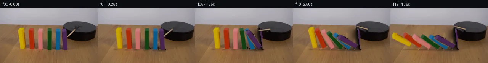

![首帧]()

Round 00
2026-11-05T17:23:28.240731+00:00像素候选变化代码 +401/−0inspection 更新
pixels 063a08f83a7cc5d9 · code df90941fe88b205f
查看本轮 generate.py 真实 diff
--- previous/generate.py
+++ current/generate.py
@@ -0,0 +1,401 @@
+"""PixelWorld-Text case_0035 generation.
+
+Scene: six colored wooden blocks stand in a domino row on a wooden table beside a
+black platform cuboid. A wooden stick hinged to the platform rotates clockwise
+(screen plane), strikes the first (purple) block and sets off a domino cascade
+toward the yellow block at the left.
+
+All pixels are produced by local Python pixel operations: analytic masks,
+harmonic in-painting of the static background, sprite extraction from frame 0,
+and analytic 2-D rigid rotation with bilinear sampling. No external models.
+"""
+from pathlib import Path
+import numpy as np
+from PIL import Image, ImageDraw, ImageFilter
+from scipy import ndimage
+from scipy.sparse import lil_matrix
+from scipy.sparse.linalg import spsolve
+from scipy.sparse import csc_matrix
+import artifact_io
+
+CASE = Path(__file__).parent
+RNG = np.random.default_rng(7)
+
+# ---------------------------------------------------------------- geometry
+F0 = np.array(Image.open(CASE / "first_frame.png").convert("RGB")).astype(np.uint8)
+H, W, _ = F0.shape
+A = F0.astype(float)
+R, G, B = A[:, :, 0], A[:, :, 1], A[:, :, 2]
+LUM = 0.3 * R + 0.59 * G + 0.11 * B
+YY, XX = np.mgrid[0:H, 0:W]
+
+# static platform quadrilateral (black cuboid silhouette)
+PLAT_POLY = [(184, 35), (220, 35), (253, 43), (255, 80), (255, 112),
+ (200, 112), (176, 107), (168, 44)]
+# table seam (wall/table), sloping gently
+seam_y = 42.0 + 0.020 * XX
+
+
+def poly_mask(poly, shape=(H, W)):
+ img = Image.new("L", (shape[1], shape[0]), 0)
+ ImageDraw.Draw(img).polygon(poly, fill=1)
+ return np.array(img, bool)
+
+
+PLATFORM = poly_mask(PLAT_POLY)
+
+# ---------------------------------------------------------------- color masks
+wood_hue = (R > G + 8) & (G > B + 2) & (R > 80)
+table_zone = (YY >= seam_y) & ~PLATFORM
+
+# per-block hue masks
+BLOCK_HUES = {
+ "Y": (R > 150) & (G > 120) & (B < 110) & (R - B > 70),
+ "R": (R > 110) & (G < 90) & (B < 80) & (R - G > 45),
+ "P": (R > 175) & (G > 95) & (G < 145) & (B > 90) & (B < 140) & (R - G > 60),
+ "G": (G > 55) & (R < 90) & (B < 95) & (G - R > 15),
+ "B": (B > 85) & (R < 110) & (G > 50) & (B - R > 30),
+ "V": (R > 40) & (R < 120) & (B > 65) & (G < 80) & (B - G > 20),
+}
+# crop box, world pivot (bottom-left), for each sprite
+BLOCK_GEO = {
+ # name: (x0,x1,y0,y1), pivot_world
+ "Y": ((44, 66, 49, 108), (47, 106)),
+ "R": ((72, 94, 50, 109), (75, 107)),
+ "P": ((97, 114, 51, 109), (100, 107)),
+ "G": ((122, 137, 51, 110), (124, 108)),
+ "B": ((144, 159, 51, 110), (146, 108)),
+ "V": ((160, 178, 51, 110), (162, 108)),
+}
+BLOCK_ORDER = ["Y", "R", "P", "G", "B", "V"] # draw order (left -> right pile)
+
+
+def largest_component(mask):
+ lab, n = ndimage.label(mask)
+ if n == 0:
+ return mask
+ sizes = ndimage.sum(np.ones_like(lab), lab, range(1, n + 1))
+ return lab == (int(np.argmax(sizes)) + 1)
+
+
+block_clean = {}
+for name, m in BLOCK_HUES.items():
+ m = m & (YY > 48) & (YY < 112)
+ block_clean[name] = largest_component(m)
+BLOCKS_UNION = np.zeros((H, W), bool)
+for m in block_clean.values():
+ BLOCKS_UNION |= m
… diff truncated; 314 more lines …